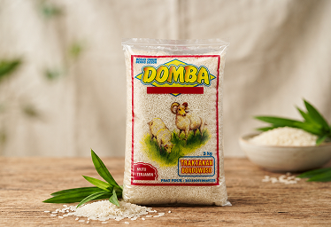
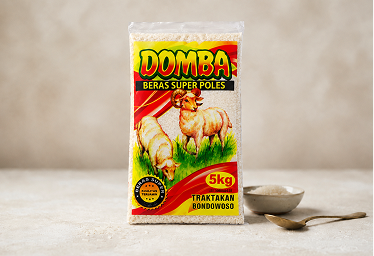

Beras Domba Langsung dari Petani Terbaik Indonesia
Beras organik pilihan dengan budidaya alami ramah lingkungan—pulen, wangi alami, dan kaya nutrisi untuk kesehatan keluarga Anda.

KEUNGGULAN KAMI
Menjaga standar mutu tertinggi mulai dari pemilihan benih unggul hingga pengemasan higienis siap santap.
Kualitas Terjamin
Ditanam di lahan subur bebas pestisida sintetis dengan pengawasan mutu ketat di setiap tahap panen.
Proses Higienis
Penggilingan presisi modern dan penyortiran optik menjamin butiran bersih, utuh, serta bebas batu atau sekam.
Harga Kompetitif
Langsung dari jaringan petani mitra tanpa rantai tengkulak panjang sehingga harga adil bagi semua.
Pengiriman Resmi
Kemasan kedap udara berlapis dikirim langsung oleh armada terpercaya agar kesegaran beras terjaga.
Sorotan Koleksi Produk Terlaris

Beras Domba
Beras pandan wangi pilihan, pulen alami, dan beraroma harum pandan segar saat dimasak.

Beras Domba
Beras premium dengan tekstur ekstra pulen dan butiran utuh, ideal untuk hidangan keluarga harian.

Beras Domba
Beras organik bebas pestisida kimia, kaya nutrisi, dan sangat baik untuk gaya hidup sehat Anda.
Kebaikan Nyata untuk Bumi & Martabat Petani
Sistem integrasi ternak domba dan pertanian padi mengembalikan kesuburan tanah secara alami sekaligus meningkatkan kesejahteraan petani mitra secara berkelanjutan.
“Sejak beralih menggunakan pupuk kompos alami dari ternak domba bersama Beras Domba, tanah sawah kami kembali gembur dan hasil panen jauh lebih berkualitas. Harga beli gabah yang adil membuat keluarga kami sangat terbantu.”